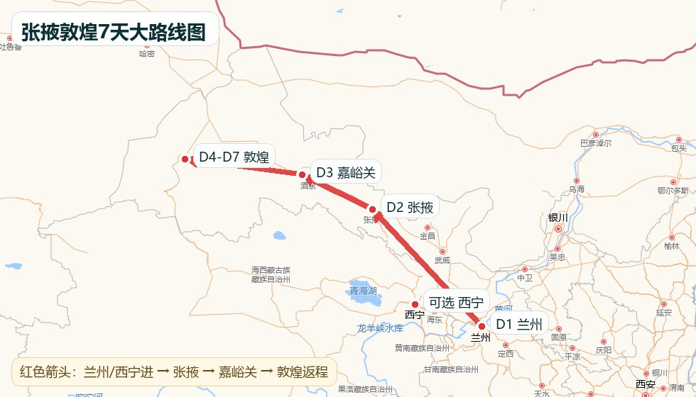
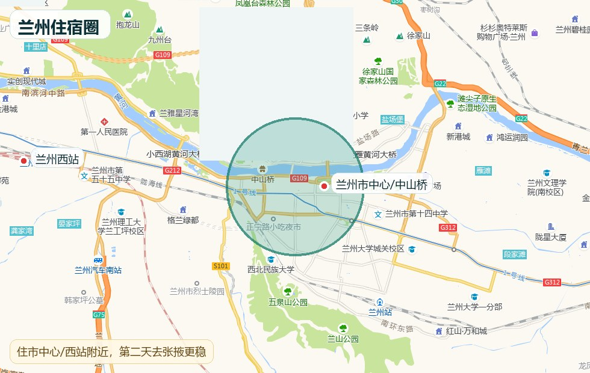
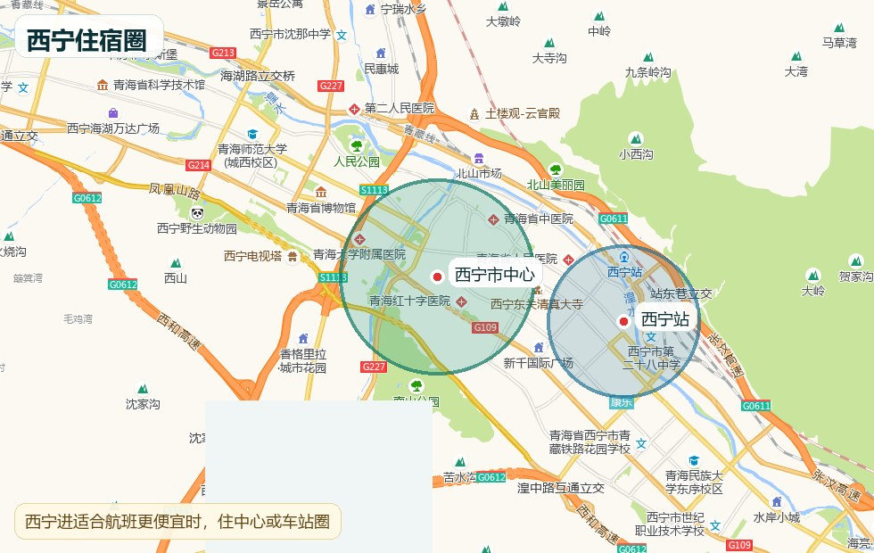
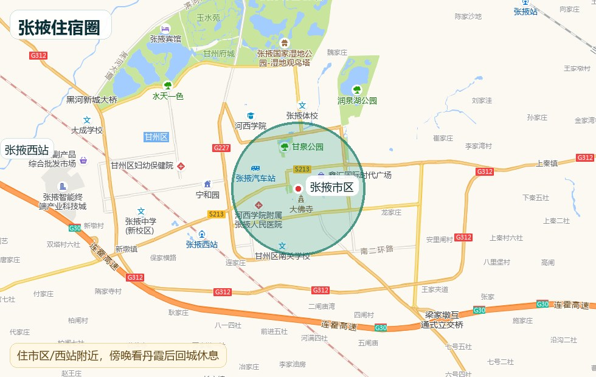
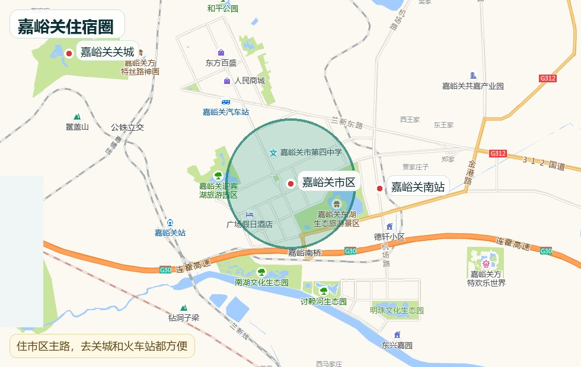
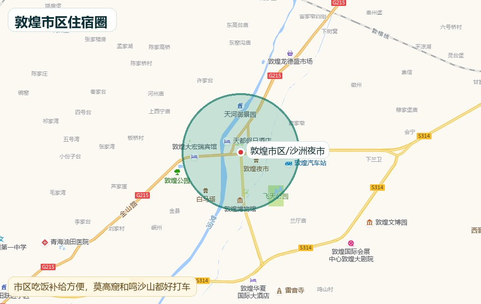
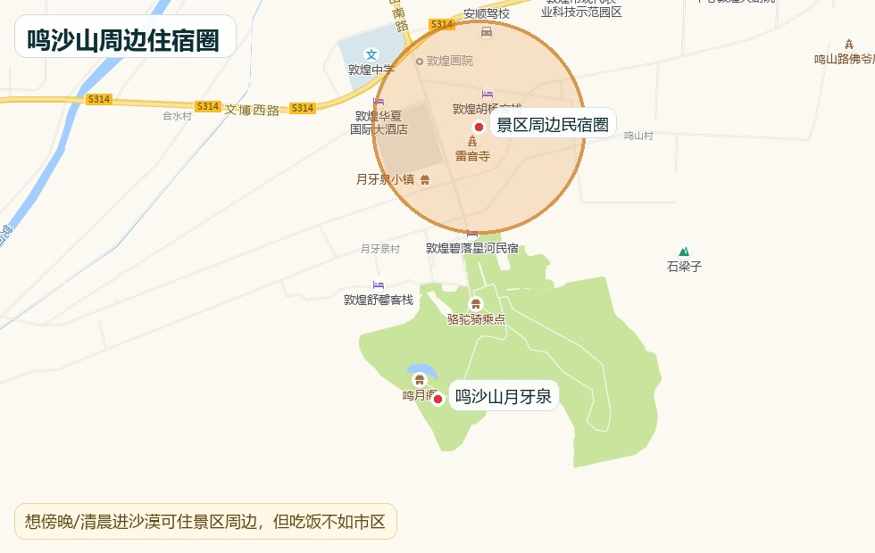
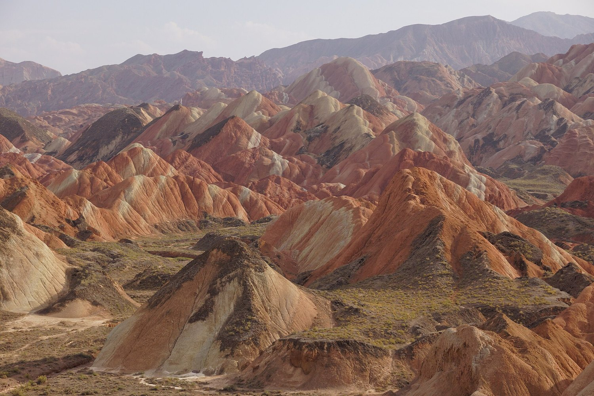
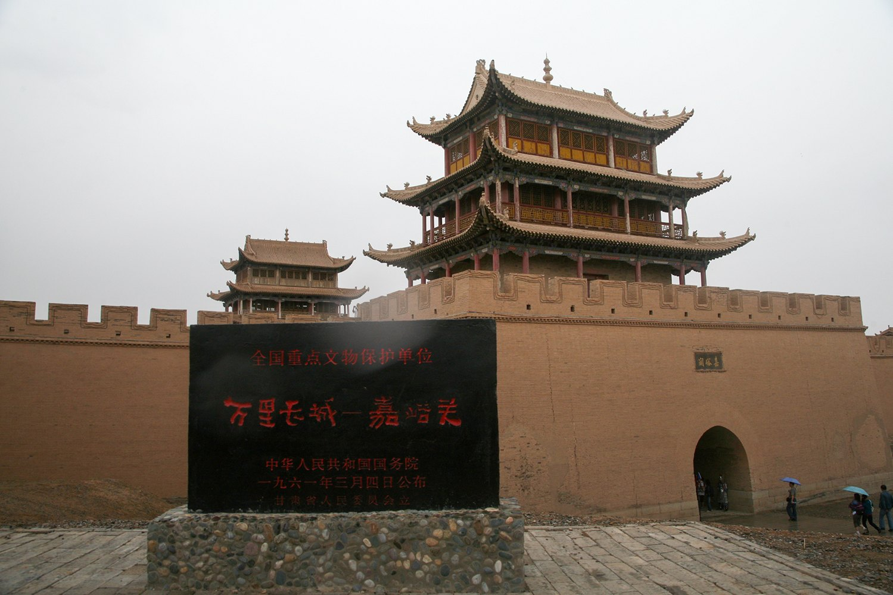

兰州/西宁进，敦煌出
如果机票价格能接受，优先“兰州或西宁落地，沿河西走廊一路向西，敦煌返程”。这样不走回头路，D5-D6可以完整留给莫高窟、鸣沙山和敦煌西线。
广州/佛山 → 兰州/西宁 → 张掖七彩丹霞 → 嘉峪关关城 → 敦煌莫高窟 → 鸣沙山月牙泉 → 敦煌西线 → 返程。
这条线的核心是“视觉反差”：丹霞颜色、关城戈壁、石窟壁画、沙漠绿洲。节奏比城市线更硬，最重要的是提前锁莫高窟、避开正午暴晒、别把夜路排太满。
如果机票价格能接受，优先“兰州或西宁落地，沿河西走廊一路向西，敦煌返程”。这样不走回头路，D5-D6可以完整留给莫高窟、鸣沙山和敦煌西线。
如果敦煌返程机票太贵，可以敦煌火车/动车回兰州再返程，但需要多留半天到一天交通缓冲，不要把D7排太满。

携程 广州 兰州 敦煌 广州 机票
12306 西宁 张掖西 火车
12306 敦煌 兰州 火车 卧铺

市中心/兰州西站周边，第二天去张掖更稳。

如果西宁进更便宜，住市中心或西宁站圈。

住市区/西站，丹霞看完回城吃饭休息。

市区主路最稳，去关城和车站都方便。

沙洲夜市/市区补给强，莫高窟和鸣沙山都好打车。

想傍晚或清晨进沙漠可选，但吃饭不如市区。
地图底图来源：高德地图网页瓦片；住宿圈为本攻略叠加的半透明范围标注。酒店最终位置以高德/美团/携程实际页面为准。
从佛山/广州去广州白云机场或广州南站，国内航班建议提前约2小时到机场，火车按12306检票时间预留。
广州白云机场 / 广州南站
直接去酒店，吃清淡晚餐，核对D2兰州/西宁到张掖车次和张掖酒店。
兰州西站 酒店 / 西宁站 酒店
兰州/西宁坐火车到张掖，具体车次和票价以12306为准。
12306 兰州 张掖西 / 西宁 张掖西
前往张掖七彩丹霞，按景区观光车路线走观景台。晴天傍晚更出片，阴天就缩短停留。
张掖七彩丹霞旅游景区 北门
张掖到嘉峪关，按12306实际车次选择嘉峪关南/嘉峪关站。
12306 张掖西 嘉峪关南
嘉峪关关城游玩，优先关城主景区；正午热就推迟出门。
嘉峪关关城 景区入口
嘉峪关到敦煌方向，按12306选择敦煌站或柳园南站；柳园南到敦煌市区还需要接驳。
12306 嘉峪关 敦煌 柳园南
沙洲夜市轻逛，买水和防晒补给，不吃太撑，不点游客套餐。
敦煌 沙洲夜市
敦煌西线 司机 小团 阳关 玉门关 雅丹 日落
前往莫高窟数字展示中心，不要直接导航去洞窟区。票种、检票、观影和摆渡以官方当日规则为准。
莫高窟数字展示中心
去鸣沙山月牙泉，傍晚看沙丘和月牙泉，白天高温时不要硬进沙漠。
鸣沙山月牙泉 景区中门
阳关、玉门关、雅丹按预算和体力选择。想省钱可选阳关/玉门关轻量版；想完整看地貌再加雅丹。
敦煌西线 阳关 玉门关 雅丹魔鬼城
酒店退房，行李按航班/火车时间寄存；中转至少留足换乘和安检时间。
敦煌机场 / 敦煌站 / 柳园南站




敦煌西线 阳关 玉门关 雅丹 小团 拼车
牛肉面可备注不辣、不要辣油；清汤面、炒青菜、手抓羊肉少蘸料、酸奶相对稳。
兰州 牛肉面 不辣 清汤
优先家常菜、面片、清汤面、炒菜；烧烤、凉拌菜、蘸料先问辣不辣。
张掖 市区 家常菜 不辣
驴肉黄面备注不辣、羊肉汤、胡羊焖饼少辣/不辣、杏皮水、清淡家常菜。夜市边走边吃，不要第一家吃饱。
敦煌 沙洲夜市 驴肉黄面 不辣
先查官方是否有其他票种/场次；仍无票则把D5改为鸣沙山+敦煌博物馆/市区休整，D6西线不变。不要找不明代购。
改到傍晚更晚时段或第二天清晨；取消骑骆驼/滑沙，只走月牙泉和近处沙丘。
先查相邻站和相邻时间；张掖/嘉峪关/敦煌之间可改动车、普通火车、顺风拼车或正规小团接驳，别临时坐黑车。
取消鸣沙山和雅丹长线，改市区休整、博物馆、夜市短逛；戴口罩/魔术巾，眼睛不舒服就回酒店。
先删鸣沙山额外项目，再把西线包车改小团/轻量版，酒店从景区周边改市区。不要删莫高窟和交通缓冲。
D3只看嘉峪关关城，D6西线改轻量版，D7不安排任何补漏。西北线体感消耗大，午休比多打卡重要。